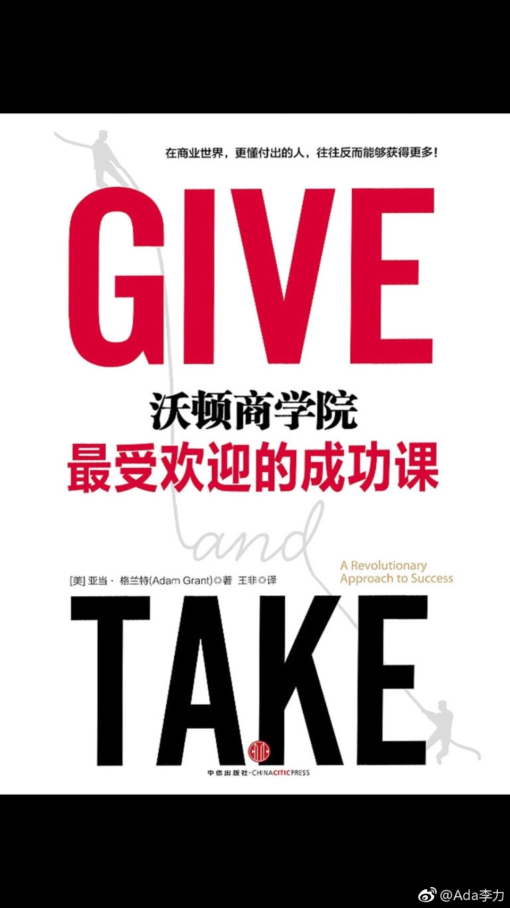

#读书# 实际是一本心理学著作，书名应该翻译成《付出和获取》
我们通常认为那些成功者大部分是获取者，但这本书告诉我们，最杰出的成功者大部分是付出者，诡异的是组织中表现最差的也是付出者。
读这本书时也不断印证了从其它地方获得的观念，比如这么几个：
1，人际互动的最佳策略是：以善为始，以牙还牙
2，付出者避免成为别人的垫脚石的做法是：学会识别那些获取者，并且不要花太多精力在这些获取者身上
3，最杰出的人是付出者的逻辑容易理解：他首先有能力帮助别人，帮助进入正反馈，进尔形成大事业。
我们通常认为那些成功者大部分是获取者，但这本书告诉我们，最杰出的成功者大部分是付出者，诡异的是组织中表现最差的也是付出者。
读这本书时也不断印证了从其它地方获得的观念，比如这么几个：
1，人际互动的最佳策略是：以善为始，以牙还牙
2，付出者避免成为别人的垫脚石的做法是：学会识别那些获取者，并且不要花太多精力在这些获取者身上
3，最杰出的人是付出者的逻辑容易理解：他首先有能力帮助别人，帮助进入正反馈，进尔形成大事业。
- 